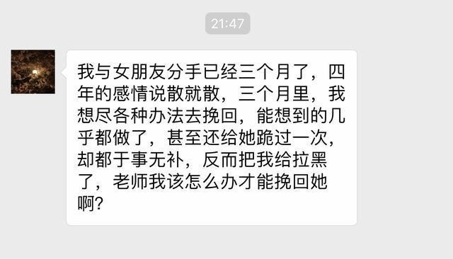
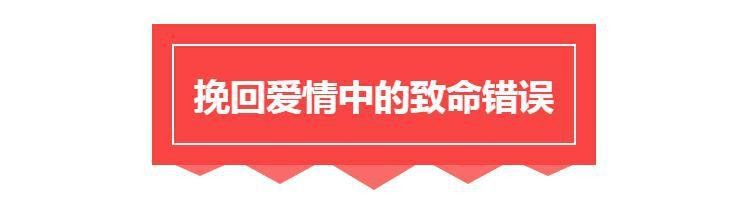
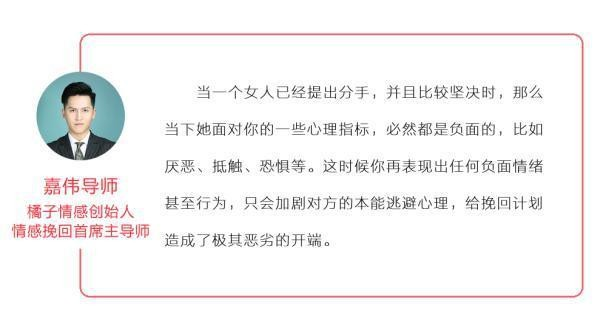

官方二维码
免费情感热线电话
400-6299-520

官方二维码
免费情感热线电话
400-6299-520

大家好，我们是橘子情感。专注情感，为爱而生。从业八年以来，橘子情感始终秉承着“专注情感、专业服务、 专心经营”的原则，致力于为大家提供挽回爱情、挽救婚姻、分离小三、订制爱情等两性情感服务。
最近一个小伙儿给导师留言：
这样的结果令他难以接受，自己堂堂男子汉最后连膝盖都献上了，却仍然无法让她回来，这么多年的感情说不要就不要了，女人真的太绝情了！
我相信这位朋友在挽回过程中遇到的问题，也同样困扰这许多人，想要挽回却把对方越推越远，能想到的方法都试过了都没有效果，卑躬屈膝地求复合却遭拉黑。 今天，橘子情感就与你分析挽回过程中你的错误以及正确解决方案。
分手并不是重点，挽回中那些错误的做法才是葬送你爱情的凶手。
你的心态是你的人生最大的本钱，因为分手导致心态崩塌，失去了原本的精神风貌，一个人在孤独中郁郁寡欢，做什么事情都提不起劲来，这完全是得不偿失的。
这种心态对你自己而言，尤其在你不承认分手的事实下，心理的负担也在加大，非理智的情绪会导致你做出很多错误的挽 回行为，甚至产生轻生的念头。
然而，你的这种状态在她看来只会让她更看不起你，认为你确实不是一个成熟可靠的男人，遇见这样的事情都把持不住自 己的情绪，担不起未来的责任，反而更加坚定了她分手的想法。
如果一个你特别讨厌的人一直在缠着你，你是什么感觉？你一定会特别的排斥他，在你心情糟糕的时候更是如此。
同样道理，分手之后，女生的情绪也是很低落的，对你特别的敏感，如果你在这时总是不断地跟她联系，堵在她的家门 口或是公司门口，甚至用自残的方式胁迫她，你得到的只会是让她离你越来越远，把你拉黑断联，甚至无奈之下 被迫离开你的生活圈子。
对女人卑躬屈膝是男人最不应该做的事情，这严重地有损你的尊严，让她觉得你是在给她压力逼迫她答应 你，更会崩裂似的破坏你在她心里仅存的一点形象，因为这时的你在她眼里已经不能再称之为男人了。
所以，不管你是乞求她、向她发誓、下跪都对挽回她没有任何一点帮助。更甚者有的男人竟然愿意当备胎也不想离开女人 ，真是令人哭笑不得。卑躬屈膝会严重破坏自我认同，造成自我否定，从此一蹶不振。
这与卑躬屈膝恰好相反，这样的男人会特别维护自己的尊严，试图通过讲大道理说服对方，让对方认清自己的错误回到自己 的身边，或是试图骂醒对方，让对方自惭形秽回到自己身边。
这简直是最幼稚的行为，因为没有人会承认别人对自己的无端指责，哪怕他有一点点道理也不可能。在女人眼里，你 这种表现无疑在告诉她你依旧保持着自己原来的样子，并不知道自己错在哪里，更别提悔过的决心，你的举动完全没有复 合的想法，只是在向她无理地宣泄情绪。
